第 9 章
容器组件
本章共 7 个小节 · PySide6 Basic Tutorial
本章要点：
普通边框（QFrame）
标签页（QTabWidget）
分组框（QGroupBox）
滚动区域（QScrollArea）
工具箱（QToolBox）
9.1
将 QWidget 组件作为容器
由于QWidget类自身支持相互嵌套来建立对象树，因此原则上从 QWidget派生的组件类都可以成为容器。Qt有专门的布局系统（从QLayout派生的类，如QGridLayout)，作为容器的组件可以使用布局类型来管理子级组件的位置和大小。
下面的代码创建了5个组件。
#顶层容器，将呈现为窗口
com1 = QWidget()
com1.setWindowTitle("组件嵌套")
#窗口使用布局
layout = QVBoxLayout()
com1.setLayout(layout)
#第二层是两个QPushButton组件
com2 = QPushButton()
com2.setParent(com1)
layout.addWidget(com2)
com3 = QPushButton(com1)
layout.addWidget(com3)
#第三层是 QLabel 组件，共两个实例
#分别嵌套在上述两个QPushButton内
com4 = QLabel("标签1", com2)
com5 = QLabel("标签2", com3)
com1 为 QWidget 类，成为顶层容器，最终会呈现为普通窗口；com2 和 com3 是 QPushButton 组件，嵌套于 com1 内，成为子级组件；com4 是 QLabel 组件，嵌套在 com2 组件内；com5 也是 QLabel 组件，嵌套在 com3 组件内。呈现效果如图 9-1 所示。
5个组件之间的包含关系如图9-2所示。
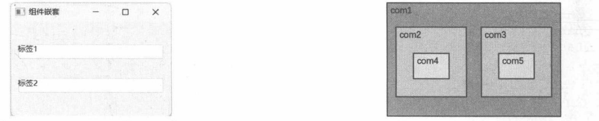
图 9-1 com1~com5 的呈现结果
9.2
示例：自定义容器
本示例将从QWidget类派生出一个自定义面板。添加到该面板的组件将沿水平方向排列。在处理子级组件的排列时可以使用QHBoxLayout类。
具体的实现步骤如下。
定义 DemoPanel 类，从 QWidget 类派生。 class DemoPanel(QWidget):
.....
在 __init__ 方法中实例化 QHBoxLayout 对象，用于控制子级组件的布局。 def __init__(self, parent: QWidget = None):
super().__init__(parent)
#布局对象
self._layout = QHBoxLayout(self)
#默认间隔
self._layout.setSpacing(5)
定义 spacing 和 setSpacing 方法，用于获取或设置子级组件之间的间隙。 def spacing(self) -> int:
return self._layout.spacing()
def setSpacing(self, space: int):
self._layout.setSpacing(space)
定义 addWidget 方法，用来添加子级组件。方法内部调用 QHBoxLayout 对象的 addWidget 方法。 def addWidget(self, widget: QWidget):
self._layout.addWidget(widget)
#设置为当前组件的子级
if widget.parent() is None:
widget.setParent(self)
重写 sizeHint 方法，计算当前组件所需要的空间。方法内部调用 QHBoxLayout 对象的 sizeHint 方法。 def sizeHint(self) -> QSize:
return self._layout.sizeHint()
实例化 QMainWindow 组件，它是 QtWidgets 模块提供的组件，表示应用程序的主窗口。 wind = QMainWindow()
wind.setWindowTitle("自定义容器")
实例化 DemoPanel 组件。 panel = DemoPanel()
panel.setSpacing(10)
创建 4 个 QLabel 组件实例，随后添加到 panel 对象中。QLabel 的背景使用随机生成的颜色填充。 #共用调色板
compa = QPalette()
#4 个 QLabel 对象
lbs = [
QLabel("A"),
QLabel("B"),
QLabel("C"),
QLabel("D")
]
for l in lbs:
#给标签设置随机背景色
l.setAutoFillBackground(True)
compa.setColor(QPalette.ColorRole.Window, QColor(
randint(0, 255),
randint(0, 255),
randint(0, 255)
))
l.setPalette(QPalette(compa))
#设置文本对齐
l.setAlignment(Qt.AlignmentFlag.AlignCenter)
将 4 个 QLabel 对象添加到 panel 中。 for l in lbs:
panel.addWidget(l)
调用 QMainWindow 对象的 setCentralWidget 方法，让 panel 对象填充主窗口的内容区域。 wind.setCentralWidget(panel)
显示主窗口。 wind.showNormal()
示例的运行结果如图9-3所示。
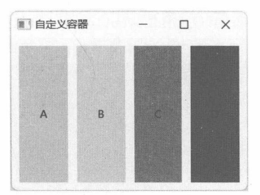
图 9-3 自定义的容器组件
9.3
QFrame
QFrame组件构建一个带有边框的空白区域，其中可以放置其他可视化组件。QFrame组件的边框可以是平面效果，也可以是三维效果，这取决于 Shape和 Shadow两个枚举的取值。
带三维效果的QFrame组件可以制作简单的容器，如面板。主要是在视觉上对组件进行分组，让其区域看起来与周围的组件不同。而平面效果的QFrame组件可以用于呈现文本、图像等内容。例如，功能比较简单的标签组件 QLabel 就是从 QFrame类派生的。结构复杂一些的如 QTextEdit、QScrollArea(提供滚动条，可移动可视区域）等组件也派生自QFrame类。
9.3.1 边框形状边框形状由QFrame.Shape枚举的值来指定，其成员如下。
NoFrame：无边框显示。
Box：绘制外框，即常规矩形边框。
Panel：面板，在三维效果下会产生模拟光照投射而形成的阴影。
StyledPanel：面板，但外观会受样式参数的影响。
HLine：只绘制单一的水平线，适用于制作分隔线。
VLine：只绘制单一的垂直线，同样适用于制作分隔线。
WinPanel：此值只用于兼容，一般推荐使用 StyledPanel。使用该值会产生类似 Windows 2000 风格的面板。
以上枚举值在平面效果（Shadow枚举的值为Plain）中外观差异不明显（绘制一个平面矩形），但在三维效果（Shadow枚举的值为 Raised或Sunken）中外观差异较大。Box形状的4个边框颜色相同，而Panel形状的4个边会分成两组外观—左、上边的风格相同，右、下边的风格相同。
9.3.2 阴影效果阴影效果能控制QFrame组件的边框呈现为平面或三维效果。阴影效果由QFrame.Shadow枚举来指定，其成员如下。
Plain：平面效果，采用窗口的前景色（QPalette.WindowText 所指定的颜色，也是窗口文本的默认颜色）来绘制边框线条。无三维效果。
Raised：三维效果。使用深浅不一的颜色绘制边框阴影，使其呈现出“凸起”的外形。
Sunken：三维效果。使用深色和浅色画笔绘制出“凹陷”的外形。
9.3.3 示例：Box 与 Panel 形状的区别本示例主要演示QFrame组件在使用三维效果后，Box与Panel形状在视觉上的区别。
下面的代码在窗口中创建网格布局（QGridLayout)，第一行放置 QFrame 组件，第二行包含两个QRadioButton 组件。
window = QWidget()
#布局
rootlayout = QGridLayout(window)
# QFrame 组件
myFrame = QFrame(window)
#为了便于观察，可以设置较粗的边框
myFrame.setLineWidth(15)
#设置内容边距
myFrame.setContentsMargins(10,10,10,10)
#使用"凸起"阴影效果
myFrame.setFrameShadow(QFrame.Shadow.Raised)
#放到网格布局中
rootlayout.addWidget(myFrame, 0, 0)
#单选按钮
sublayout = QHBoxLayout()
rootlayout.addLayout(sublayout, 1, 0)
opt1 = QRadioButton("Box", window)
opt2 = QRadioButton("Panel", window)
sublayout.addWidget(opt1)
sublayout.addWidget(opt2)
为了便于观察 QFrame 组件的边框，将其边框宽度设置为 15。本示例中 QFrame 组件的阴影使用“凸起”效果（Raised）。
处理两个 QRadioButton 组件的 toggled 信号，当单选按钮的状态切换时修改 QFrame 组件的边框形状（使用setFrameShape方法）。代码如下：
def onOpt1Toggled(checked: bool):
if checked:
myFrame.setFrameShape(QFrame.Shape.Box)
def onOpt2Toggled(checked: bool):
if checked:
myFrame.setFrameShape(QFrame.Shape.Panel)
opt1.toggled.connect(onOpt1Toggled)
opt2.toggled.connect(onOpt2Toggled)
运行示例程序，然后单击Box选项，设置QFrame组件的边框形状为Box，如图9-4所示。
单击选中 Panel选项，设置 QFrame组件的边框形状为 Panel，如图9-5所示。
通过对比可知，当QFrame组件使用Box形状的边框时，只有边框自身呈现出“凸起”效果；而使用Panel形状时，在边框内的整个矩形区域都呈现出“凸起”效果。
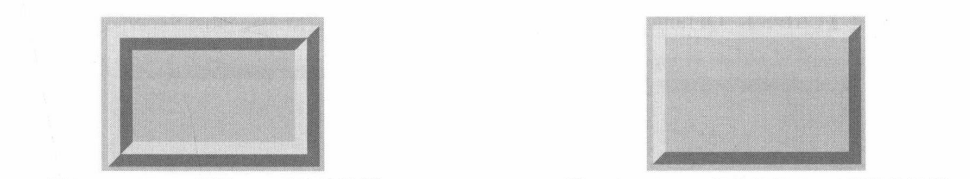
图 9-4 QFrame 使用 Box 形状的边框
9.3.4 示例：“凸起”和“凹陷”阴影的区别本示例主要演示 QFrame 组件中“凸起”和“凹陷”两种阴影的区别。设置阴影风格需要调用 setFrameShadow 方法，例如：
frame.setFrameShadow(QFrame.Shadow.Plain)
本示例将通过快捷键来切换 QFrame 组件的阴影风格。具体代码如下：
frame = QFrame()
......
#设置边框宽度
frame.setLineWidth(15)
#设置边框形状为Box
frame.setFrameShape(QFrame.Shape.Box)
#添加快捷键
# Ctrl + R：设置"凸起"阴影效果
accKey1 = QShortcut(frame)
accKey1.setKey(QKeySequence("ctrl+R"))
accKey1.setEnabled(True)
accKey1.setContext(Qt.ShortcutContext.WindowShortcut)
accKey1.activated.connect(lambda: frame.setFrameShadow(QFrame.Shadow.Raised))
# Ctrl + S：设置"凹陷"阴影效果
accKey2 = QShortcut(frame)
accKey2.setKey(QKeySequence("ctrl+S"))
accKey2.setEnabled(True)
accKey2.setContext(Qt.ShortcutContext.WindowShortcut)
accKey2.activated.connect(lambda: frame.setFrameShadow(QFrame.Shadow.Sunken))
#显示组件
frame.show()
启用快捷键的流程如下。
实例化 QShortcut对象，并将其附加到对象树中，父级为QFrame组件。
调用 setKey 方法设置按键。它需要一个 QKeySequence 对象来描述快捷键，快捷键可以用字符串来定义，如ctrl+F，表示在按住【Ctrl】键的同时按下【F】键，即可触发。定义的字符串不区分大小写，ctrl+s 和 Ctrl+S 均有效。
调用setEnabled方法使快捷键变为可用状态。此步可以省略，因为快捷键默认处于可用状态。
调用 setContext方法可以设置快捷键的运用范围。WindowShortcut表示把快捷键注册为窗口级别，在整个窗口内均可用。也可以使用ApplicationShortcut值，使快捷键作用于整个应用程序。
连接activated信号。当快捷键被触发时，QShortcut对象会发出该信号，在本示例中，将调用setFrameShadow方法修改 QFrame组件的阴影风格。
运行示例程序，QFrame组件默认使用平面效果的阴影，此时按下快捷键【Ctrl+R】，应用“凸起”效果，如图9-6所示。
按下快捷键【Ctrl+S】，QFrame组件的边框阴影将变为“凹陷”效果，如图9-7所示。
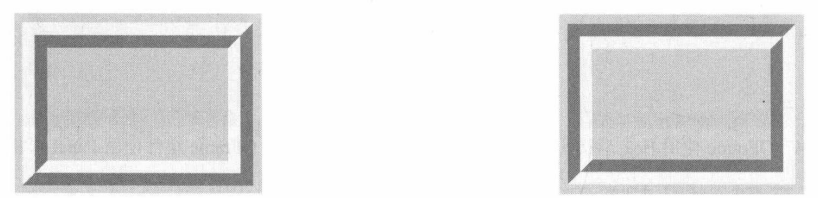
图9-6“凸起”阴影
通过本示例的对比可知，Raised阴影使边框看起来高于矩形平面，而Sunken阴影则低于矩形平面。
9.3.5 中线（mid-line）此处中线是指位于外边框与内边框中间的一条线段，如图9-8所示。
如果去掉中线（线宽为0)，那么外框线与内框线会粘连在一起，如图9-9所示。
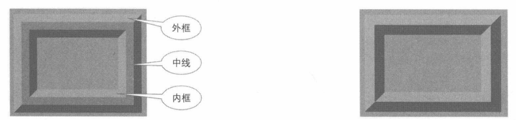
图9-8 边框与中线的位置
要修改中线的宽度，可以调用 setMidLineWidth方法，例如：
frame = QFrame()
frame.setLineWidth(15)
frame.setMidLineWidth(10)
9.3.6 setFrameStyle 方法setFrameStyle 方法是 setFrameShape 和 setFrameShadow 方法的合并版本，可以同时设置边框形状（Shape）和阴影（Shadow）。传递参数时，将两个枚举类型的值用“或”运算符连接。例如，下面的代码指定 QFrame 组件使用 Panel 形状以及“凹陷”阴影效果。
frame.setFrameStyle(
QFrame.Shape.Panel | QFrame.Shadow.Sunken
)
再如，要使用Box形状和平面效果，setFrameStyle方法的调用如下：
frame.setFrameStyle(
QFrame.Shape.Box | QFrame.Shadow.Plain
)
9.4
QTabWidget
QTabWidget组件以“页面”的方式管理子级组件。QTabWidget组件提供一排标签栏，当用户选择一个标签后，“页面”区域会显示与该标签关联的内容组件，同时发出 currentChanged信号。QTabWidget组件的标签栏默认位于页面上方（顶部)，可以通过setTabPosition方法改变标签栏的位置。
QTabWidget 组件分为两部分，标签栏由 QTabBar 组件负责呈现，而页面部分则由 QStackedWidget组件呈现，如图9-10所示。
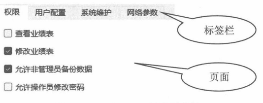
图 9-10 QTabWidget 组件的结构
9.4.1 示例：动态添加页面本示例演示在运行阶段向 QTabWidget 组件动态添加页面。程序代码需要调用 addTab 方法添加标签页，其声明如下：
def addTab(widget: QWidget, label: str) -> int
def addTab(widget: QWidget, icon: Union[QIcon, QPixmap], label: str) -> int
widget 参数指定要作为页面内容的可视化组件；label 参数设置要在标签上显示的标题文本；icon参数设置在标签上显示的图标。返回值是新页面的索引。
另外，如果需要在特定的索引处插入新页面，还可以使用insertTab方法：
def insertTab(index: int, widget: QWidget, label: str) -> int
def insertTab(index: int, widget: QWidget, icon: Union[QIcon, QPixmap], label: str) -> int
index参数指定要插入新页面的位置，index之后且已经存在的页面索引会递增。例如，QTabWidget组件中已有三个页面（索引为0、1、2)，往索引为1的位置插入新页面。位于索引0处的页面位置不变，但原索引为1、2的页面，其索引递增后变为2、3。
本示例需要定义窗口类，派生自 QTabWidget 类。初始化时默认添加一个页面，并且页面上有一个按钮，单击按钮后，会添加一个新的页面。自定义窗口类的代码如下：
class AppWindow(QTabWidget):
def __init__(self, parent: QWidget = None):
super().__init__(parent)
self.resize(350, 300)
self.setWindowTitle("动态添加Tab")
#初始化时添加第一页
page = QFrame(self)
page.setFrameStyle(QFrame.Shape.Panel | QFrame.Shadow.Plain)
page.setLineWidth(1)
btn = QPushButton(page)
btn.setText("添加新页面")
btn.move(25, 40)
#连接clicked信号，单击该按钮添加新页面
btn.clicked.connect(self.onAddPage)
self.addTab(page,"默认页")
为“添加新页面”按钮处理clicked信号，连接onAddPage方法。该方法的实现代码如下：
def onAddPage(self):
#获取页面总数
count = self.count()
#新页面标题
tabTitle = f"页面-{count + 1}"
#页面中显示的组件
body = QLabel(self)
#显示当前时间
body.setText(f"添加时间：{QTime.currentTime().toString()}")
#设置字体大小和颜色
body.setStyleSheet("font-size: 18pt; color: blue")
#添加新页
self.addTab(body, tabTitle)
新页面的内容是QLabel组件，其中显示的文本为当前时间。
运行示例程序，初始化后如图9-11所示。
单击“添加新页面”按钮，添加新的标签页，如图9-12所示。
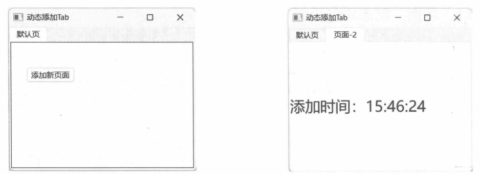
图 9-11 初始页面
9.4.2 示例：设置标签栏的位置QTabWidget 组件允许通过 setTabPosition 方法修改标签栏的位置。位置参数由 TabPosition 枚举类型定义（使用地理方位），成员如下。
North：北面，即位于内容页的上方。
South：南面，即位于内容页的下方。
West：西面，即位于内容页的左方。
East：东面，即位于内容页的右方。
下面的代码实例化QTabWidget类，并在第一页中放置4个按钮，分别对应上述4个枚举值。
tabs = QTabWidget()
tabs.setWindowTitle("标签栏的位置")
#添加第一个页面
_w = QWidget()
#网格布局
layout = QGridLayout(_w)
#4个按钮
btn1 = QPushButton("东", _w)
btn2 = QPushButton("西", _w)
btn3 = QPushButton("南", _w)
btn4 = QPushButton("北", _w)
layout.addWidget(btn1, 1, 2)
layout.addWidget(btn2, 1, 0)
layout.addWidget(btn3, 2, 1)
layout.addWidget(btn4, 0, 1)
tabs.addTab(_w,"初始页")
依次处理 4 个按钮的 clicked 信号，调用 setTabPosition 方法改变标签栏的位置。
btn1.clicked.connect(lambda: tabs.setTabPosition(QTabWidget.TabPosition.East))
btn2.clicked.connect(lambda: tabs.setTabPosition(QTabWidget.TabPosition.West))
btn3.clicked.connect(lambda: tabs.setTabPosition(QTabWidget.TabPosition.South))
btn4.clicked.connect(lambda: tabs.setTabPosition(QTabWidget.TabPosition.North))
继续添加 4 个页面，内容为空白的 QWidget 对象。
tabs.addTab(QWidget(),"第二页")
tabs.addTab(QWidget(),"第三页")
tabs.addTab(QWidget(),"第四页")
tabs.addTab(QWidget(),"第五页")
运行示例程序，单击“初始页”上面的按钮改变标签栏的位置，如图9-13和图9-14所示。
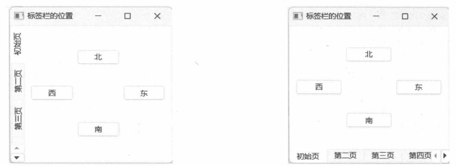
图 9-13 标签栏位于内容页的左侧
9.4.3 示例：带图标的标签调用addTab方法时可以为新标签指定一个图标。本示例将在QTabWidget组件中新建4个页面，同时它们的标签上都带有图标。
关键代码如下：
tabw = QTabWidget()
#添加4个页面，并且标签上都带有图标
ico1 = QIcon("01.png")
ico2 = QIcon("02.png")
ico3 = QIcon("03.png")
ico4 = QIcon("04.png")
tabw.addTab(QWidget(),ico1,"标签1")
tabw.addTab(QWidget(),ico2,"标签2")
tabw.addTab(QWidget(),ico3,"标签3")
tabw.addTab(QWidget(),ico4,"标签4")
#显示组件
tabw.showNormal()
图标用QIcon类表示，直接从PNG格式的图像文件加载数据，然后传递给addTab方法。图标将显示在标签文本的左边，如图9-15所示。
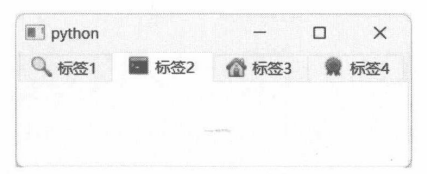
图 9-15 带有图标的标签
9.4.4 使用快捷键当QTabWidget组件的标签文本中出现“&”字符时，紧跟在“&”之后的字母（不区分大小写）会被视为快捷键。用户只要按下【Alt+<字母>】就能激活文本所在的标签页。
例如，有以下4个标签页：
tabwindow = QTabWidget()
#添加4个页面
tabwindow.addTab(QWidget(), "Pic&true")
tabwindow.addTab(QWidget(), "Sh&ell")
tabwindow.addTab(QWidget(), "&Markers")
tabwindow.addTab(QWidget(), "&Folders")
第一个标签的文本是Pic&true，“&”之后是字符“t”，因此激活Picture标签的快捷键就是【Alt+T】；第二个标签的文本是Sh&ell，字符“&”之后是字符“e”，因此激活Shell标签的快捷键便是【Alt+E】。剩下的Markers和Folders标签也是同样的规律，它们的快捷键依次是【Alt+M】和【Alt+F】。
当用户按下【Alt】键后，作为快捷键的字母下方会出现短横线（下画线），如图9-16所示。
下画线的作用是提示用户该按哪个键。假如按下了快捷键【Alt+F】，Folders标签就会选中，如图9-17所示。
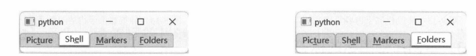
图9-16 作为快捷键的字母会带有下画线
9.5
QGroupBox
QGroupBox组件包含标题文本、边框以及面板。添加的子级组件将呈现在面板区域内。QGroupBox组件不会自动排列子级组件，因此建议在QGroupBox中使用布局类（如QGridLayout），再往布局对象中添加组件。
可以直接在调用 QGroupBox类的构造函数时指定标题文本，也可以在实例化 QGroupBox后再通过setTitle方法设置标题，还可以调用setAlignment方法设置标题文本的对齐方式，如居中对齐，默认左对齐。
9.5.1 示例：QGroupBox 的基础用法本示例将演示QGroupBox组件的简单用法。下面代码直接创建QGroupBox组件的实例作为主窗口，并在 QGroupBox 内部放置 4 个 QCheckBox 组件。
gbox = QGroupBox("这里是标题")
#使用布局
layout = QVBoxLayout(gbox)
#往布局上放组件
cb1 = QCheckBox("选项A")
cb2 = QCheckBox("选项 B")
cb3 = QCheckBox("选项C")
cb4 = QCheckBox("选项 D")
layout.addWidget(cb1)
layout.addWidget(cb2)
layout.addWidget(cb3)
layout.addWidget(cb4)
layout.addStretch(1)
#显示组件
gbox.show()
QGroupBox内部可以放置任意QWidget组件以及它的子类组件。为了减少排版工作量，最好使用布局类，如本示例中使用了QVBoxLayout布局。
最终效果如图9-18所示。
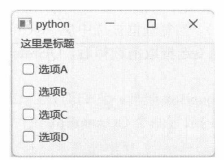
图 9-18 QGroupBox 组件的外观
9.5.2 示例：设置标题的对齐方式QGroupBox组件的标题默认设置为左对齐，若要改变其对齐方式，需要调用setAlignment方法。参数值使用的是 Qt.AlignmentFlag 枚举。
本示例在QGroupBox组件中放置 3个按钮组件（QPushButton)，分别控制 QGroupBox标题文本的对齐方式。具体代码如下：
groupBox = QGroupBox()
#设置标题
groupBox.setTitle("标题文本")
#使用布局
layout = QVBoxLayout()
groupBox.setLayout(layout)
#添加3个按钮
btnLeft = QPushButton("左对齐")
btnCenter = QPushButton("居中对齐")
btnRight = QPushButton("右对齐")
#添加到布局中
layout.addWidget(btnLeft)
layout.addWidget(btnCenter)
layout.addWidget(btnRight)
#响应按钮的clicked信号
btnLeft.clicked.connect(lambda: groupBox.setAlignment(Qt.AlignmentFlag.AlignLeft))
btnCenter.clicked.connect(lambda: groupBox.setAlignment(Qt.AlignmentFlag.AlignHCenter))
btnRight.clicked.connect(lambda: groupBox.setAlignment(Qt.AlignmentFlag.AlignRight))
#显示组件
groupBox.show()
运行示例程序后，单击“居中对齐”按钮，QGroupBox的标题就会出现在容器的中间位置，如图9-19所示。
接着单击“右对齐”按钮，标题文本就会出现在容器的右上方，如图9-20所示。
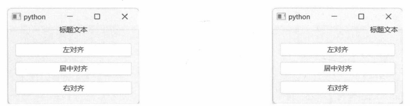
图 9-19 标题居中对齐
9.5.3 示例：启用分组框的 Check 功能QGroupBox 组件可以通过 setCheckable 方法开启 Check 功能。开启后，在 QGroupBox 组件的标题前面会显示复选框（类似 QCheckBox）。当复选框被选中后，QGroupBox 组件内的所有子级组件都处于可交互状态（允许用户进行操作）；当复选框取消选择后，QGroupBox 组件内的所有子级组件都被禁用（用户无法操作）。
本示例将在窗口上放置两个QGroupBox组件，它们均开启Check功能。具体步骤如下。
初始化顶层窗口，并在窗口内放置两个 QGroupBox 组件。 window = QWidget()
#在窗口中放置两个QGroupBox组件
rootlayout = QHBoxLayout(window)
grpBox1 = QGroupBox(window)
grpBox2 = QGroupBox(window)
rootlayout.addWidget(grpBox1, 1)
rootlayout.addWidget(grpBox2, 1)
分别为两个 QGroupBox 组件设置标题文本。
grpBox1.setTitle("第一组")
grpBox2.setTitle("第二组")
开启两个 QGroupBox 组件的 Check 功能。
grpBox1.setCheckable(True)
grpBox2.setCheckable(True)
第一个 QGroupBox 组件中将创建 3 个 QRadioButton 组件。
_sublayout1 = QVBoxLayout(grpBox1)
optA = QRadioButton("选项--A", grpBox1)
optB = QRadioButton("选项--B", grpBox1)
optC = QRadioButton("选项--C", grpBox1)
_sublayout1.addWidget(optA)
_sublayout1.addWidget(optB)
_sublayout1.addWidget(optC)
_sublayout1.addStretch(1)
第二个 QGroupBox 组件中使用 QFormLayout 类进行布局管理，并添加 3 个字段。
_sublayout2 = QFormLayout(grpBox2)
_sublayout2.addRow("字段1：", QLineEdit(grpBox2))
_sublayout2.addRow("字段2：", QCheckBox("是否启用", grpBox2))
_sublayout2.addRow("字段3：", QSpinBox(grpBox2))
显示窗口。 window.show()
运行示例代码，QGroupBox组件的复选框默认为选中状态，因此里面的组件都是可用的，如图9-21所示。
单击QGroupBox组件标题前面的复选框，使其变为未选中状态。此时，QGroupBox组件内的所有子级组件都不可用，如图9-22所示。
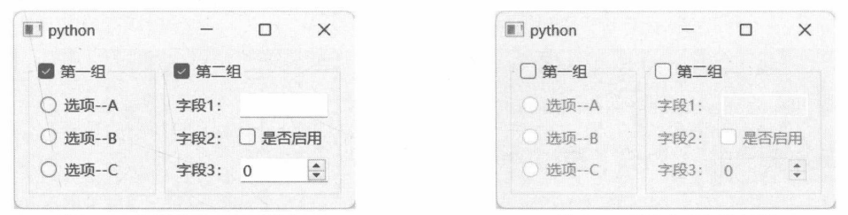
图 9-21组件均处于可用状态
9.6
QScrollArea
QScrollArea组件提供一个视图区域，当要呈现的内容大于视图区域时，就会出现滚动条。
要为 QScrollArea 设置内容组件，请调用 setWidget 方法。由于 QScrollArea 组件需要根据内容组件的大小来计算是否显示滚动条，以及滚动条滑块的位置，因此程序代码应该为内容组件设置合适的尺寸。
如果 QScrollArea 组件的内容是现有的 Qt 组件（如 QLabel)，那么可以调用 setMinimumSize 方法设置最小尺寸，或者调用setFixedSize方法设置固定尺寸；如果 QScrollArea的内容是自定义的组件类，那么在实现自定义组件时，可以重写sizeHint方法，并返回合适的大小。
默认情况下，QScrollArea组件将按需显示滚动条。代码可通过 setHorizontalScrollBarPolicy方法(作用于水平滚动条）或 setVerticalScrollBarPolicy 方法（作用于垂直滚动条）来调整滚动条显示策略。其可选策略由 ScrollBarPolicy 枚举定义。
ScrollBarAsNeeded：按需显示。这是默认值，只有当内容大于 QScrollArea 的视图区域时才会显示滚动条。
ScrollBarAlwaysOff：不管内容是否超出视图区域，都不会显示滚动条。
ScrollBarAlwaysOn：不管内容是否超出视图区域，始终显示滚动条。
9.6.1 示例：在 QScrollArea中承载自定义组件本示例先实现自定义组件类，然后将它设置为QScrollArea的内容组件。
CustWidget类的实现代码如下：
class CustWidget(QWidget):
def __init__(self, parent: QWidget = None):
super().__init__(parent)
#默认颜色
self._fillColor = QColor("blue")
def __init__(self, fillColor: QColor, parent: QWidget = None):
super().__init__(parent)
#设置颜色
self._fillColor = fillColor
def paintEvent(self, event: QPaintEvent) -> None:
rect = self.rect()
painter = QPainter()
painter.begin(self)
#将背景设置为黑色、白色渐变
#渐变起点：矩形顶部的中心位置
#渐变终点：矩形底部的中心位置
lg = QLinearGradient(
QPoint(rect.center().x(), rect.top()),
QPoint(rect.center().x(), rect.bottom()),
)
lg.setColorAt(0.0, QColor("black"))
lg.setColorAt(1.0, QColor("white"))
painter.setBackground(lg)
#设置绘图的画刷
painter.setBrush(QBrush(self._fillColor))
#先填充背景
painter.eraseRect(rect)
#绘制椭圆
painter.drawEllipse(rect)
painter.end()
def sizeHint(self) -> QSize:
#返回该组件所需要的空间
return QSize(800, 600)
该组件在实例化时可以提供fillColor值（默认蓝色），随后使用该颜色在组件上绘制椭圆。
CustWidget类重写了sizeHint方法，返回默认需求的大小（800×600像素）。
初始化 QScrollArea 组件，然后调用 setWidget方法将 CustWidget 对象设置为内容组件。
scroller = QScrollArea()
#初始化自定义组件
wg = CustWidget(QColor("Gold"))
scroller.setWidget(wg)
#显示滚动视图
scroller.show()
运行示例程序，当CustWidget组件的尺寸大于QScrollArea组件的视图区域时，会出现水平和垂直滚动条，如图9-23所示。
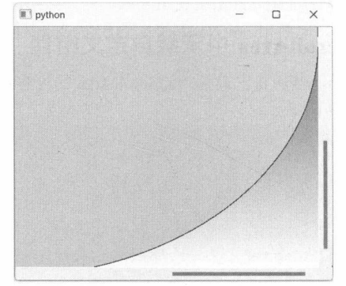
图 9-23 程序界面出现滚动条
9.6.2 示例：设置内容组件的对齐方式当QScrollArea有充足的空间显示内容时，滚动条自动隐藏（默认行为），此时可以用setAlignment方法来设置内容组件中QScrollArea视图区域中的对齐方式。该方法的参数类型是 Qt.AlignmentFlag枚举。枚举值可以组合使用，例如AlignLeft|AlignTop表示水平方向上左对齐，垂直方向上为顶部对齐，两个值组合后表示对象将对齐到容器的左上角。
本示例将创建9个按钮，代表9个对齐点—水平方向上的左、中、右，垂直方向上的上、中、下，两者组合起来就产生9个对齐点了。通过单击按钮可以设定QLabel组件中QScrollArea容器中的对齐方式。
具体的实现步骤如下。
创建 QWidget 实例，作为顶层窗口。 window = QWidget()
window.setWindowTitle("对齐方式")
顶层窗口使用 QHBoxLayout 布局（水平排列）。 layout = QHBoxLayout()
window.setLayout(layout)
添加子布局 QGridLayout（网格布局），嵌套在 QHBoxLayout 布局内。 sublayout = QGridLayout()
sublayout.setAlignment(Qt.AlignmentFlag.AlignTop)
向网格布局添加 9 个按钮。 #btn1：对齐到左上角
#btn2：对齐到顶部居中位置
#btn3：对齐到右上角
#btn4：对齐到左侧居中位置
#btn5：对齐到中心位置（水平、垂直方向上均居中）
#btn6：对齐到右侧居中位置
#btn7：对齐到左下角
#btn8：对齐到底部居中位置
#btn9：对齐到右下角
btn1 = QPushButton("↖")
btn2 = QPushButton(" ↑")
btn3 = QPushButton("↗")
btn4 = QPushButton("←")
btn5 = QPushButton("●")
btn6 = QPushButton("→")
btn7 = QPushButton("↙")
btn8 = QPushButton(" ↓")
btn9 = QPushButton("↘")
#第一行第一列
sublayout.addWidget(btn1, 0, 0)
#第一行第二列
sublayout.addWidget(btn2, 0, 1)
#第一行第三列
sublayout.addWidget(btn3, 0, 2)
#第二行第一列
sublayout.addWidget(btn4, 1, 0)
#第二行第二列
sublayout.addWidget(btn5, 1, 1)
#第二行第三列
sublayout.addWidget(btn6, 1, 2)
#第三行第一列
sublayout.addWidget(btn7, 2, 0)
#第三行第二列
sublayout.addWidget(btn8, 2, 1)
#第三行第三列
sublayout.addWidget(btn9, 2, 2)
9 个按钮的大小统一，均为 30×30 像素。 for r in range(0, sublayout.rowCount()):
for c in range(0, sublayout.columnCount()):
item = sublayout.itemAtPosition(r,c)
item.widget().setFixedSize(30, 30)
layout.addLayout(sublayout)
初始化 QScrollArea 组件。 scrollar = QScrollArea(window)
呈现图像可以使用 QLabel 组件。 img = QPixmap("demo.jpg")
lbimg = QLabel()
lbimg.setPixmap(img)
#让标签组件根据内容重新调整大小
lbimg.adjustSize()
#设置滚动视图的内容
scrollar.setWidget(lbimg)
layout.addWidget(scrollar)
调用 setPixmap方法后，可以调用 adjustSize方法让QLabel组件根据呈现的内容自己调整其大小。
连接 9 个按钮的 clicked 信号，为 QScrollArea 组件设置对齐方式。 btn1.clicked.connect(
lambda: scrollar.setAlignment(
Qt.AlignmentFlag.AlignLeft | Qt.AlignmentFlag.AlignTop
)
)
btn2.clicked.connect(
lambda: scrollar.setAlignment(
Qt.AlignmentFlag.AlignTop | Qt.AlignmentFlag.AlignHCenter
)
)
btn3.clicked.connect(
lambda: scrollar.setAlignment(
Qt.AlignmentFlag.AlignRight | Qt.AlignmentFlag.AlignTop
)
)
btn4.clicked.connect(
lambda: scrollar.setAlignment(
Qt.AlignmentFlag.AlignLeft | Qt.AlignmentFlag.AlignVCenter
)
)
btn5.clicked.connect(lambda: scrollar.setAlignment(Qt.AlignmentFlag.AlignCenter))
btn6.clicked.connect(
lambda: scrollar.setAlignment(
Qt.AlignmentFlag.AlignRight | Qt.AlignmentFlag.AlignVCenter
)
)
btn7.clicked.connect(
lambda: scrollar.setAlignment(
Qt.AlignmentFlag.AlignLeft | Qt.AlignmentFlag.AlignBottom
)
)
btn8.clicked.connect(
lambda: scrollar.setAlignment(
Qt.AlignmentFlag.AlignHCenter | Qt.AlignmentFlag.AlignBottom
)
)
btn9.clicked.connect(
lambda: scrollar.setAlignment(
Qt.AlignmentFlag.AlignRight | Qt.AlignmentFlag.AlignBottom
)
)
显示窗口。 window.show()
运行示例后，适当调整窗口的大小，使呈现的图像有足够的空间完成对齐，然后单击窗口左边的按钮来调整图像的对齐位置。例如，单击“↘”按钮让图像对齐到右下角，如图9-24所示。
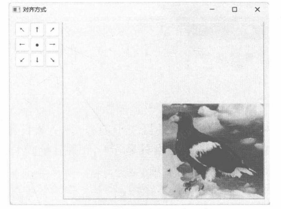
图 9-24图像对齐到右下角
9.6.3 示例：拉伸图像本示例搭配使用 QScrollArea和 QLabel组件实现拉伸图像的功能。
要实现拉伸图像的功能，两个组件需要满足以下条件。
设置 QScrollArea 组件的 widgetResizable 属性为 True（通过 setWidgetResizable 方法），使 QScrollArea 组件能够根据视图的变化调整 QLabel 组件的大小。
QLabel 组件需要调用 setScaledContents 方法启用自动缩放内容的功能。
QLabel 组件需要调用 setSizePolicy 方法将水平、垂直方向上的缩放策略修改为 Ignored。否则，当滚动视图小于 QLabel 组件的最小尺寸时，预设的缩放策略会导致 QScrollArea 组件出现滚动条，图像无法拉伸。
示例的核心代码如下：
#创建 QScrollArea 组件
scrollarea = QScrollArea()
#自动调整内容组件的大小
scrollarea.setWidgetResizable(True)
#创建QLabel组件，显示图像
widget = QLabel()
#自动缩放内容
widget.setScaledContents(True)
#忽略缩放策略
widget.setSizePolicy(QSizePolicy.Policy.Ignored, QSizePolicy.Policy.Ignored)
#设置要加载的图像文件
widget.setPixmap(QPixmap("test.jpg"))
#设置 QScrollArea 的内容组件
scrollarea.setWidget(widget)
#显示组件
scrollarea.show()
运行示例程序，直接调整窗口大小即可拉伸图像，如图9-25和图9-26所示。
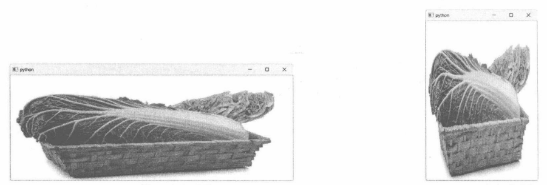
图 9-25 横向拉伸图像
9.7
QToolBox
QToolBox（工具箱组件）中可以添加多个条目（子项），每个条目都包含标题（可以带图标）和内容组件。QToolBox类似于TabWidget组件，每次只显示一个条目的内容，其他条目被折叠。
以下方法成员可以向QToolBox组件添加子项。
def addItem(widget: QWidget, icon: Union[QIcon, QPixmap], text: str) -> int
def addItem(widget: QWidget, text: str) -> int
QToolBox 组件允许将任意 QWidget 对象（包括 QWidget 的子类）添加到子项列表中。text 参数表示工具箱条目的标题文本。icon 是可选参数，用于加载显示在标题文本前面的图标。返回值是新条目的索引。
另外，下面的方法也可以添加条目：
def insertItem(index: int, widget: QWidget, icon: Union[QIcon, QPixmap], text: str) -> int
def insertItem(index: int, widget: QWidget, text: str) -> int
insertItem方法用于在指定索引处（index参数）处插入新条目。
如果工具箱条目的标题不足以描述其用途，还可以使用以下方法为其设置工具提示：
def setItemToolTip(self, index: int, toolTip: str)
index参数表示要设置工具提示的条目索引，toolTip参数表示工具提示文本。当鼠标指针移动到条目标题上并悬浮片刻后，会显示提示文本。
访问currentIndex方法可以获得当前被激活的工具箱条目的索引。若要获得当前条目的QWidget组件引用，请使用currentWidget方法。当工具箱中被激活的条目变更后，QToolBox组件会发出currentChanged信号，并通过 index参数携带被激活条目的索引。
9.7.1 示例：带图标的工具箱条目本示例将创建4个带图标和标题的工具箱条目。定义4个函数，用于为工具箱条目初始化QWidget（或其子类）对象，代码如下：
def makeWidget1():
w = QWidget()
#水平布局
layout = QHBoxLayout(w)
#两个单选按钮
ra = QRadioButton("Open", w)
rb = QRadioButton("Close", w)
rb.setChecked(True)
layout.addWidget(ra)
layout.addWidget(rb)
return w
def makeWidget2():
#列表组件
w = QListWidget()
w.addItem("Item 1")
w.addItem("Item 2")
w.addItem("Item 3")
return w
def makeWidget3():
#标签组件
lb = QLabel()
lb.setText("Game Box")
return lb
def makeWidget4():
w = QWidget()
layout = QGridLayout()
w.setLayout(layout)
#两个按钮
bA = QPushButton("按钮1", w)
bB = QPushButton("按钮 2", w)
#滑动条组件
sld = QSlider(Qt.Orientation.Horizontal, w)
sld.setMaximum(30)
sld.setValue(17)
sld.setTickInterval(2)
layout.addWidget(bA, 0, 0)
layout.addWidget(bB, 0, 1)
layout.addWidget(sld, 1, 0, 1, 2)
return w
实例化 QToolBox 组件，然后调用 addItem 方法添加 4 个条目，代码如下：
toolBox = QToolBox()
toolBox.setWindowTitle("我的工具箱")
#添加工具箱条目
toolBox.addItem(makeWidget1(), QIcon("01.png"), "第一组")
toolBox.addItem(makeWidget2(),QIcon("02.png"),"第二组")
toolBox.addItem(makeWidget3(), QIcon("03.png"), "第三组")
toolBox.addItem(makeWidget4(), QIcon("04.png"), "第四组")
QIcon类用于加载图标，本示例使用了4个大小为16×16像素的图像文件。“第一组”“第二组”等是标题文本。
示例运行结果如图 9-27 所示。注意，QToolBox 组件一次只显示一个条目的内容，可以单击条目标题来切换内容。
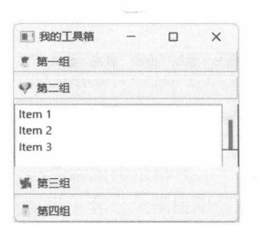
图 9-27带图标的工具箱条目
9.7.2 示例：处理 currentChanged 信号当 QToolBox 组件中当前选中的条目改变后会发出 currentChanged 信号，并提供最新被选中的条目索引。本示例将处理 currentChanged 信号，根据索引获取当前条目的标题文本，并显示在 QLabel 组件中。
以下代码初始化顶层窗口。
window = QWidget()
#布局
layout = QVBoxLayout()
window.setLayout(layout)
窗口使用垂直排列布局。下面的代码初始化 QToolBox 组件，添加 5 个条目。
toolbox = QToolBox(window)
#添加条目
lb1 = QLabel("礼、乐、射、御、书、数")
toolbox.addItem(lb1,"六艺")
lb2 = QLabel("初伏、中伏、末伏")
toolbox.addItem(lb2,"三伏")
lb3 = QLabel("金、石、土、木、丝、革、匏、竹")
toolbox.addItem(lb3,"八音")
lb4 = QLabel("春、夏、秋、冬")
toolbox.addItem(lb4, "四时")
lb5 = QLabel("黄帝、颛顼、帝喾、唐尧、虞舜")
toolbox.addItem(lb5,"五帝")
layout.addWidget(toolbox, 1)
#显示当前条目的标题
lbMsg = QLabel()
layout.addWidget(lbMsg)
连接 currentChanged 信号，将当前条目的标题显示在名为 lbMsg 的 QLabel 组件中。
def onCurrentChanged(index: int):
#获取标题
title = toolbox.itemText(index)
lbMsg.setText(f"当前标题：{title}")
toolbox.currentChanged.connect(onCurrentChanged)
运行示例后，单击当前某个工具箱条目的标题，该条目便处于选中状态。同时，窗口底部的标签组件会显示该条目的标题，如图9-28所示。
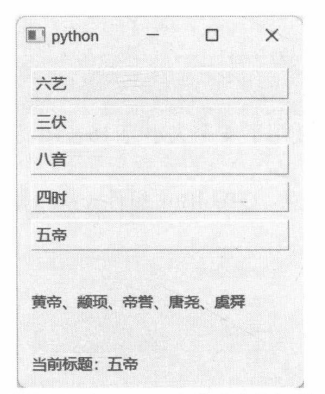
图 9-28 标签显示当前选中的标题